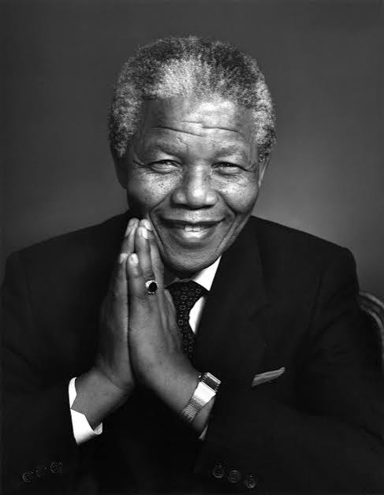

Nelson Mandela
1918-2013 | Leader of Freedom and Reconciliation

Biography
Nelson Mandela was a South African anti-aparteid leader and statesman. After 27 years in prison, he helped guide his country to democracy. In 1994 he became its first black president.
Timeline and Achievements
- 1962 - Arrested and sentenced to life imprisonment
- 1990 - Released from prison
- 1993 - Awarded the Nobel Peace Prize
- 1994 - Elected as the first black president of South Africa
Quote
"Education is the most powerful weapon which you can use to change the world."
Lasting Contribution He showed that forgiveness and reconciliation can heal a divided nation.